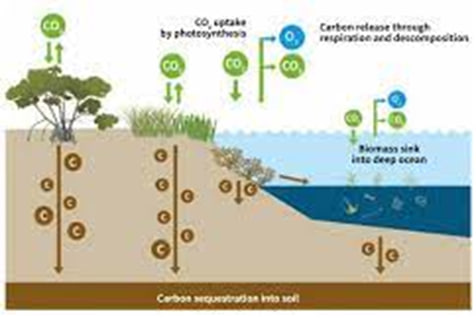
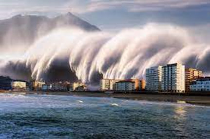
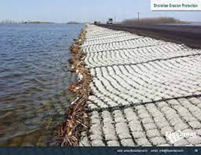

Ocean disasters

The importance of ocean in avoiding the climate and weather disaster.
Oceans, which span more than 70% of the Earth's surface, play an important role in global climate management. They serve as heat reservoirs, absorbing and releasing sun-generated heat, controlling global temperatures, and carrying heat from the equator to the poles. Ocean currents recirculate heat throughout the earth due to temperature and salinity differences. Ocean evaporation and precipitation generate clouds and precipitation, which influence rainfall patterns and weather occurrences. Oceans also play a role in climate regulation by absorbing and storing carbon dioxide, acting as a carbon sink. Tropical cyclones, hurricanes, and typhoons are fueled by warm ocean waters, which suck heat and moisture from the ocean. Cloud formation, anomalies in sea surface temperature, and climate feedback loops all have an impact on global climate.
The storm and ocean currents
The oceans have an important role in storm creation and ocean current management, which contribute to climatic stability and weather patterns. They provide energy for storm generation and intensification by acting as the major heat source for storms. Temperature and salinity differences drive ocean currents, which transfer heat and moisture globally, impacting regional climates and weather patterns. Monitoring these currents aids in the prediction of climatic fluctuations and the management of extreme weather events.
The biodiversity and carbon sequestration
Oceans are indispensable for biodiversity, carbon sequestration, and ecosystem services. They harbor diverse species, sustain fisheries, and offer vital habitats. Ecosystem services like coral reefs shield coastlines and bolster fisheries. Oceans serve as Earth's primary carbon sinks, absorbing CO2 to mitigate climate change. They regulate global temperatures, support nutrient cycles, and uphold biodiversity. Coastal ecosystems, including mangroves and salt marshes, are pivotal for biodiversity and habitat preservation. Oceans also yield cultural and economic benefits, sustaining coastal communities' livelihoods and identities. Therefore, safeguarding ocean health is paramount for global sustainability.
The hurricanes and tsunamis
Oceans, while not preventing hurricanes and tsunamis, serve as critical factors in their formation and impact mitigation. Hurricanes, powered by warm ocean waters, draw heat energy from the sea's surface. Monitoring ocean temperatures is vital for predicting and gauging their intensity. When hurricanes encounter cooler ocean waters or make landfall, their primary heat source diminishes, causing them to weaken, indirectly reducing the damage they can inflict on coastal regions.
Tsunamis, often triggered by undersea earthquakes or volcanic eruptions, exploit the vastness of oceans to propagate across great distances. These marine phenomena find their medium in oceans, which provide the conduit for seismic events to generate tsunamis. Early warning systems utilizing ocean buoy networks are essential for alerting coastal communities to approaching tsunamis.
In essence, oceans play pivotal roles in the processes governing hurricanes and tsunamis, and understanding these interactions is essential for predicting, preparing for, and mitigating the impact of these natural disasters.
Erosion control.
Oceans are essential for erosion control along coastlines. They absorb and dissipate the energy of ocean waves as they approach the shore, reducing their erosive force. Coastal features like barrier islands and reefs act as natural buffers, absorbing wave energy and shielding the mainland. Coastal vegetation, including mangroves and salt marshes, stabilizes coastlines by binding soil and serving as a protective barrier. Oceans supply sediments that replenish eroded shorelines, aiding in erosion prevention. During storms, oceans absorb and distribute storm surge energy, minimizing erosion and damage. Additionally, oceans play a role in long-term coastal stability, influencing factors like sea level rise. Understanding these interactions is crucial for effective erosion control and coastal preservation.
Conclusion
Oceans, covering 70% of Earth's surface, are vital for climate regulation, serving as heat reservoirs, generating ocean currents, and absorbing carbon dioxide. They fuel tropical storms with warm waters and influence global climate phenomena. Oceans also support biodiversity, act as carbon sinks, and provide ecosystem services. While oceans don't prevent hurricanes and tsunamis, they impact their formation and intensity. Additionally, oceans aid in erosion control, dissipating wave energy, and supplying sediments. Understanding these roles is crucial for climate management, disaster preparedness, and coastal preservation.